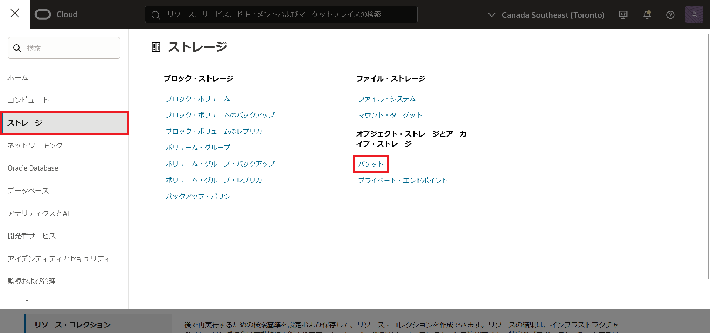
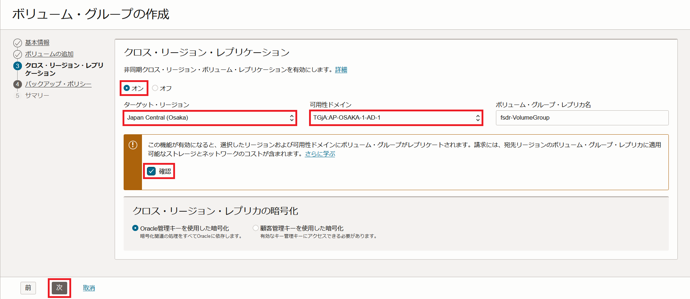

はじめに
OCI Full Stack Disaster Recovery (FSDR) は、Oracle Cloud Infrastructure (OCI)のディザスタ・リカバリ・オーケストレーションおよび管理サービスであり、インフラ、ミドルウェア、データベース、アプリケーションなど、アプリケーション・スタックのすべてのレイヤーに包括的なディザスタ・リカバリ機能を提供します。
FSDRは以下の要素で構成されます。
-
ディザスタ・リカバリ保護グループ(DR保護グループ)
DR保護グループは、フル・スタック・アプリケーションのすべてのコンポーネントをグループ化し、すべてのコンポーネントをまとめてリカバリしてフル・スタック・アプリケーションをリストアできるようにします。 DR保護グループに追加できるコンポーネントは、FSDRが対応しているコンピュート・インスタンス、ボリューム・グループ、Oracle DatabaseなどのOCIリソースです。 これらのリソースは、DR保護グループのメンバーと呼ばれます。 DR保護グループは、プライマリ・リージョン(本番環境)とスタンバイ・リージョン(災害対策環境)にそれぞれ1つずつ作成し、それらは関連付けされます。
-
ディザスタ・リカバリ計画(DR計画)
DR計画は、FSDRによって作成される自動DRワークフローで、プライマリDR保護グループ内のすべてのリソースの障害回復を実行します。 DR計画は、以下の4種類の計画タイプが存在します。
-
フェイルオーバー(計画外)
スタンバイDR保護グループへのサービスの計画外切り替えを実行するDR計画のタイプ。 フェイルオーバー計画は、プライマリ・リージョンでのサービス停止をせず、スタンバイ・リージョンでアプリケーション・スタックを起動することで即時切り替えを実行します。 フェイルオーバー計画は通常、プライマリ・リージョンが停止または障害発生した場合に使用されます。
-
スイッチオーバー(計画済)
プライマリDR保護グループからスタンバイDR保護グループへのサービスの計画済切り替えを実行するDR計画のタイプ。 スイッチオーバー計画は、プライマリ・リージョンのアプリケーション・スタックを停止してから、スタンバイ・リージョンでそれを起動することで、順次切り替えを実行します。 スイッチオーバー計画は通常、計画済サイト・メンテナンス、ソフトウェアのパッチ適用、DRテストおよび検証の目的で使用されます。
-
ドリルの開始
DRドリルは、災害対策環境が正常に起動できるかどうかをチェックするために実行されます。 スタンバイDR保護グループに、スイッチオーバーまたはフェイルオーバーの実行時に起動される環境のレプリカが作成されます。
-
ドリルの停止
DRドリルを停止するDR計画のタイプです。これにより、ドリルの開始で前に作成した本番スタックのレプリカが削除されます。
-
本チュートリアルでは、FSDRを用いてOCIリソースをDR保護グループのメンバーに追加し、スイッチオーバー計画を発行して実行するまでの流れをご紹介します。
目次
前提条件 :
- ユーザーに必要なIAMポリシーが割り当てられていること。ポリシーの詳細はドキュメントを参照ください。
- 2つ以上のリージョンをサブスクライブしていること。
注意 :
- チュートリアル内の画面ショットについてはOracle Cloud Infrastructureの現在のコンソール画面と異なっている場合があります。
- 本チュートリアルでは、Japan East(Tokyo) をプライマリ・リージョン、Japan Central(Osaka) をスタンバイ・リージョンとしています。その他のリージョンを使用してチュートリアルを行う場合は、リージョン名を読み替えながら進めてください。
所要時間 : 約90分
1. 準備作業(バケットの作成)
FSDRでは、オブジェクト・ストレージを使用してDR操作ログを格納するため、事前にオブジェクト・ストレージ・バケットを作成します。 バケットはプライマリ・リージョンとスタンバイ・リージョン両方で作成する必要があります。
1-1. プライマリ・リージョン
まずはプライマリ・リージョン(Tokyo)側からバケットを作成します。
-
メニューからストレージ → オブジェクト・ストレージ → バケットを選択し、有効な管理権限を持つコンパートメントを選択します。

-
右上でTokyoリージョンを選択し、バケットの作成ボタンを押します。
-
バケット名をfsdr-log-tokyoにして、それ以外はデフォルト設定のまま作成ボタンを押します。
1-2. スタンバイ・リージョン
次に、スタンバイ・リージョン側でバケットを作成します。
-
右上でOsakaリージョンを選択し、バケットの作成ボタンを押します。
-
バケット名をfsdr-log-osakaにして、それ以外はデフォルト設定のまま作成ボタンを押します。
2. DR保護グループの作成
2-1. プライマリ・リージョン
-
メニューから移行とディザスタ・リカバリ → ディザスタ・リカバリ → DR保護グループを選択します。
-
右上でTokyoリージョンを選択し、DR保護グループの作成ボタンを押します。
-
名前欄にdrpg-tokyoと記入し、オブジェクト・ストレージ・バケットでfsdr-log-tokyoを選択します。それ以外の設定はデフォルトのまま作成ボタンを押します。
2-2. スタンバイ・リージョン
-
右上でOsakaリージョンを選択し、DR保護グループの作成ボタンを押します。
-
名前欄にdrpg-osakaと記入し、オブジェクト・ストレージ・バケットでfsdr-log-osakaを選択します。それ以外の設定はデフォルトのまま作成ボタンを押します。
3. DR保護グループの関連付け
作成した2つのDR保護グループの関連付けを行います。
-
DR保護グループの一覧画面で、右上からTokyoリージョンを選択し、drpg-tokyoを押します。
-
アクションを押して表示されたプルダウンメニューから関連付けを選択します。
-
ロールはプライマリ、ピア・リージョンはJapan Central(Osaka)、ピアDR保護グループはdrpg-osakaをそれぞれ選択して、関連付けを押します。
関連付けが完了すると、drpg-tokyoのロールがプライマリになり、ピアDR保護グループでdrpg-osakaと表示されます。
4. OCIリソースをDR保護グループのメンバーに追加
DR保護グループの関連付けが完了したら、いよいよアプリケーションのコンポーネントをDR保護グループに登録します。 例として、ボリューム・グループ、コンピュート・インスタンス、Autonomous Databaseを、それぞれDR保護グループに登録する方法をご紹介します。 その他のOCIリソースをメンバーに追加する方法は、マニュアル (Oracle Cloud Infrastructureドキュメント) を参照してください。
4-1 ボリューム・グループの追加
DR保護グループのメンバーにブロック・ボリュームやブート・ボリュームを追加するとき、各ボリュームをボリューム・グループにまとめ、クロス・リージョン・レプリケーションを有効にする必要があります。 ここでは、作成済みのブロック・ボリュームをボリューム・グループに登録し、DR保護グループに追加する流れをご紹介します。
前提条件 : Tokyoリージョンに作成済のブロック・ボリュームがあること。
-
メニューからストレージ → ブロック・ストレージ → ボリューム・グループを選択し、有効な管理権限を持つコンパートメントを選択します。
-
右上でTokyoリージョンを選択し、ボリューム・グループの作成を押します。
-
名前にfsdr-VolumeGroupと記入し、可用性ドメインでTGjA:AP-TOKYO-1-AD-1を選択します。その後、次を押します。
-
ボリュームで、作成済みのブロック・ボリュームを選択します。その後、次を押します。
-
「非同期クロス・リージョン・ボリューム・レプリケーションを有効にします。」のチェックでオンを選択し、ターゲット・リージョンでJapan Central (Osaka)、可用性ドメインでTGjA:AP-OSAKA-1-AD-1を選択します。その後、確認のチェックを入れ、次を押します。

-
設定は変更せず次を押します。
-
設定内容を確認し、問題なければ作成を押します。
-
drpg-tokyoの詳細画面でメンバーを選択し、メンバーの追加を押します。
-
リソース・タイプでボリューム・グループを選択します。
-
「すべての既存プランをリフレッシュし、検証する必要があることを理解しています」をチェックし、ボリューム・グループでfsdr-VolumeGroupを選択します。その後、追加を押します。
4-2 コンピュート・インスタンスの追加
コンピュート・インスタンスは、以下2つのどちらかのタイプを選択し、DR保護グループのメンバーに追加します。
-
移動インスタンス
移動インスタンスは、スイッチオーバー計画かフェイルオーバー計画が実行されると、プライマリDR保護グループからスタンバイDR保護グループに移動されます。 インスタンスは、FSDRがプライマリDR保護グループのインスタンスを自動停止(もしくは削除)し、スタンバイDR保護グループで新規にインスタンスを自動作成することで移動されます。 ユーザーは、事前にプライマリ・リージョンにのみインスタンスをデプロイします。
-
非移動インスタンス
非移動インスタンスは、スイッチオーバー計画かフェイルオーバー計画が実行されると、プライマリ・リージョンとスタンバイ・リージョンのインスタンスを起動もしくは停止することで、サービスの切り替えを実現します。 プライマリDR保護グループからスタンバイDR保護グループに移動されません。 ユーザーは、事前にプライマリ・リージョンとスタンバイ・リージョンの両方にインスタンスをデプロイする必要があります。
ここでは、非移動インスタンスをDR保護グループのメンバーとして登録する流れをご紹介します。
前提条件 : TokyoリージョンおよびOsakaリージョンにそれぞれ作成済のコンピュート・インスタンスがあること。
-
drpg-tokyoの詳細画面でメンバーを選択し、メンバーの追加を押します。
-
リソース・タイプでコンピュートを選択します。
-
「すべての既存プランをリフレッシュし、検証する必要があることを理解しています」をチェックし、インスタンスで作成済みのコンピュート・インスタンスを選択し、コンピュート・インスタンス・タイプで非移動インスタンスを選択します。
-
拡張オプションを押し、「フェイルオーバー/スイッチオーバーでのインスタンスの起動と停止」をチェックします。その後追加を押します。
-
drpg-osakaの詳細画面でメンバーを選択し、メンバーの追加を押します。
-
リソース・タイプでコンピュートを選択します。
-
「すべての既存プランをリフレッシュし、検証する必要があることを理解しています」をチェックし、インスタンスで作成済みのコンピュート・インスタンスを選択し、コンピュート・インスタンス・タイプで非移動インスタンスを選択します。
-
拡張オプションを押し、「フェイルオーバー/スイッチオーバーでのインスタンスの起動と停止」をチェックします。その後追加を押します。
4-3 Autonomous Database (ADB)の追加
Autonomous Database (ADB)をDR保護グループのメンバーに追加するためには、事前にAutonomous Data Guard (AuDG)を構成しておく必要があります。 ここでは、作成済のADBでAuDGを構成し、DR保護グループに追加する流れをご紹介します。
前提条件 : Tokyoリージョンに作成済のADBがあること。
-
メニューからOracle Database → Autonomous Databaseを選択し、有効な管理権限を持つコンパートメントを選択します。
-
右上でTokyoリージョンを選択し、作成済みADBの名前を押します。
-
ディザスタ・リカバリを選択肢、ピア・データベースの追加を押します。
-
リージョンで日本中央(大阪)を選択します。
-
Autonomous Data Guardを選択し、追加を押します。 これによりAutonomous Data Guardが構成されます。(作業完了まで数分かかります。) 作成が完了すると、ピアAutonomous Database欄に、Autonomous Data Guardによって作成されてスタンバイ・データベースが表示されます。
-
drpg-tokyoの詳細画面でメンバーを選択し、メンバーの追加を押します。
-
リソース・タイプで自律型データベースを選択します。
-
「すべての既存プランをリフレッシュし、検証する必要があることを理解しています」をチェックし、データベースで作成済みのADBを選択します。その後、追加を押します。
-
drpg-osakaの詳細画面でメンバーを選択し、メンバーの追加を押します。(ADBは、プライマリ・リージョンとスタンバイ・リージョンの両方で、DR保護グループのメンバーとして追加します。)
-
リソース・タイプで自律型データベースを選択します。
-
「すべての既存プランをリフレッシュし、検証する必要があることを理解しています」をチェックし、データベースでスタンバイのADBを選択します。その後、追加を押します。
5. DR計画の作成
DR保護グループへのメンバー追加が完了したら、DR計画を作成します。 DR計画の作成は、スタンバイDR保護グループで行います。 ここでは4つのDR計画タイプの中から、例としてスイッチオーバー計画を作成していきます。
-
drpg-osakaの詳細画面で計画を選択し、計画の作成を押します。
-
名前にdr-plan1と記入し、プラン・タイプでスイッチオーバー(計画済)を選択します。その後、作成を押します。
6. DR計画の実行
最後は作成したスイッチオーバー計画を実行し、プライマリ・リージョンとスタンバイ・リージョンの切り替えを行います。
-
DR計画実行前の各DR保護グループの状態は以下の画像のように、それぞれdrpg-tokyo(左)がプライマリ、drpg-osaka(右)がスタンバイになってることを確認します。
-
drpg-osakaの詳細画面で計画を選択し、dr-plan1の三点リーダーを押します。その後、表示されたプルダウンメニューから計画の実行を選択します。
-
計画実行名にexecute_switchoverと入力し、計画の実行押します。その後、計画が開始されるので、完了まで待ちます。
-
計画が完了すると、drpg-tokyo(左)とdrpg-osaka(右)のロールが切り替わります。また、メンバーの状態も実行前と逆転します。
以上でこのチュートリアルは終了です。
参考資料
- [製品サイト] Full Stack Disaster Recovery
- [マニュアル] Oracle Cloud Infrastructureドキュメント(Full Stack Disaster Recovery)